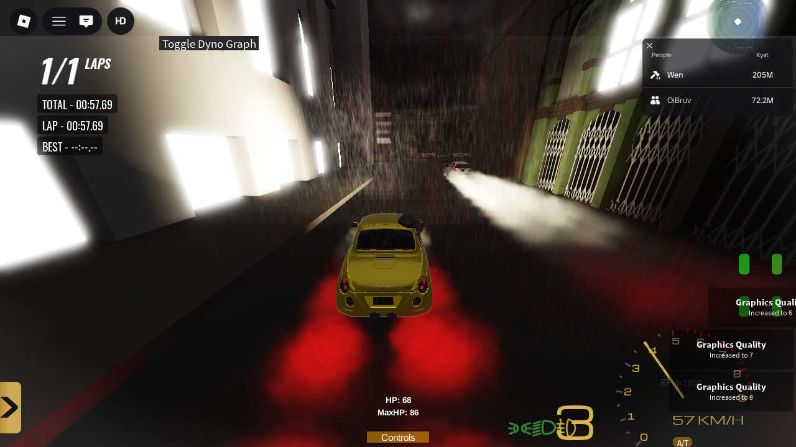
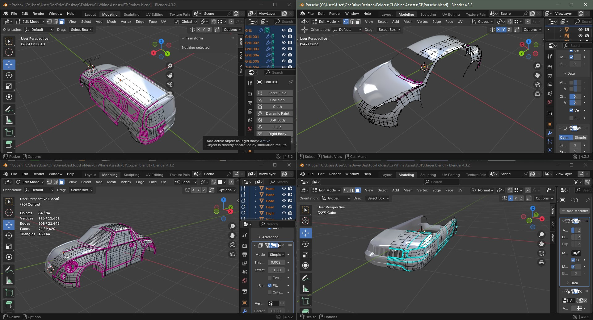
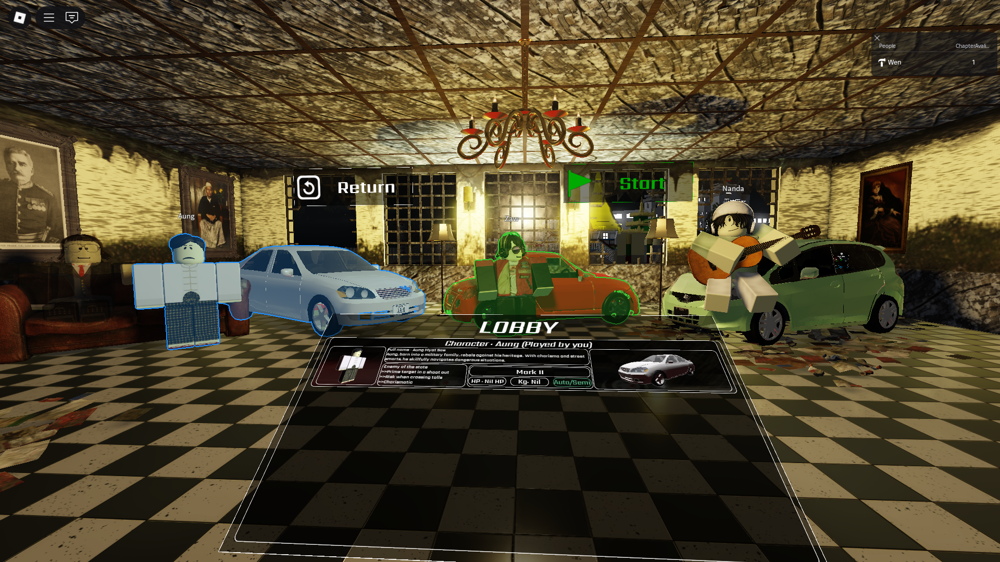

4 Years Roblox Studio • 1 Year Blender • Scripting • Modeling • Building
ExploreI am a Roblox developer with 4 years of experience in Roblox Studio and 1 year of experience in Blender. I specialize in scripting, modeling, and building immersive game environments. I can handle full game development pipelines from mechanics to visual design.
A large-scale open-world driving game recreating real Myanmar locations. Features optimized buildings, tailored vehicle physics, and dynamic environmental design.
High-detail vehicle models created in Blender and optimized for Roblox import. Includes accurate proportions, clean topology, and performance-aware polygon counts.
Custom interactive main menu UI designed for immersion and clarity. Built with responsive layout structure, animation transitions, and clean visual hierarchy.
Email: your@email.com
Discord: yourdiscord#0000